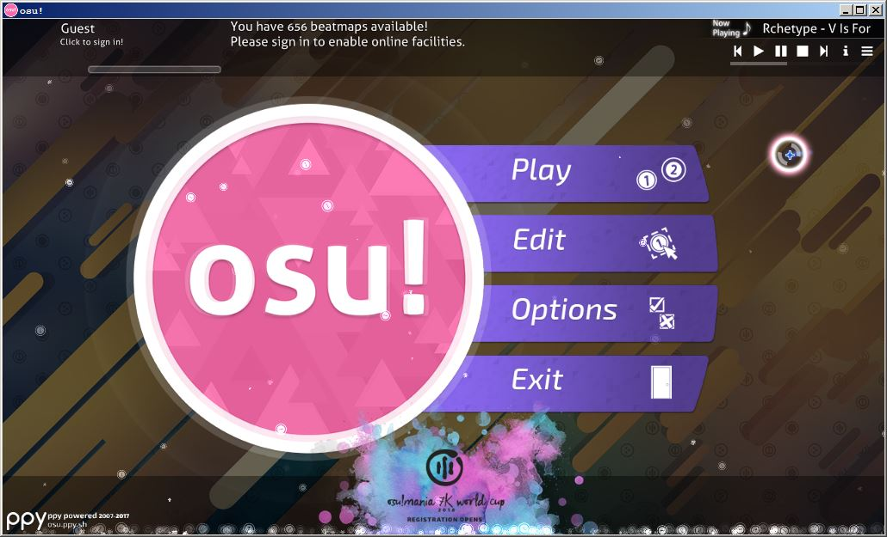

Об "osu!":
Осу - редкий представитель жанра ритм-игр. Она бесплатна, есть версии как для персонального компьютера (Windows и macOS), так и для мобильных устройств, но они имеют заметные отличия и рассматриваться не будут. Разработка обновленного клиента игры ведется в режиме open-source, и его можно так же скомпилировать под все операционные системы, на которых есть .NET 4.6.1. Игра является многопользовательской, имеет оффициальный сайт и форум для поддержки сообщества. Периодически сообществам проводятся соревнования (например, в данный момент проводится чемпионат мира по режиму osu!mania 7K). Для игры кроме клиента необходимы карты, которые представляют из себя аудио-файлы и файлы .osu, опционально - изображение фона, аудио-сэмплы для хитсаундов. Они распростроняются через оффициальный сайт в виде архивов .osz. Карты, расположенные в разделе "Ranked & approved", имеют таблицу рекордов. Все карты этого раздела проверяются на соответствие стандартам и являются достаточно качественными.
